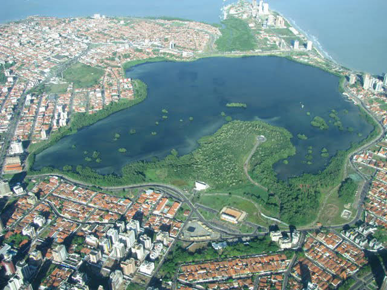
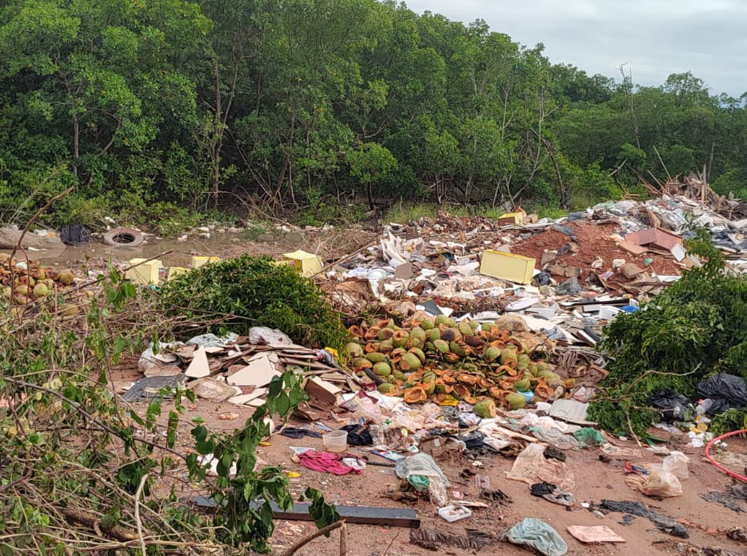

Jornal Escolar

Notícias
Aqui iremos colocar conteúdos do jornal escolar que ainda estão sendo desenvolvidos!
Saiba Mais.png)
Últimas Notícias

Veja como é a vida de pescadores da Raposa
Explore o cotidiano dos pescadores de Raposa, onde as vidas são moldadas pelas águas da Baía de São Marcos. Descubra suas tradições, desafios e a estreita ligação com o oceano. Uma narrativa que revela a essência de uma comunidade entrelaçada com a vida marinha.
Leia Mais

A Lagoa da Jansen: Um Patrimônio Natural Ameaçado pelo Descuido Ambiental
Moradores de São Luís enfrentam os impactos da poluição na Lagoa da Jansen
Leia Mais

Importância dos Manguezais
Explore as consequências da degradação dos manguezais, desde a perda de biodiversidade até os desafios socioeconômicos enfrentados pelas populações locais que dependem desses ecossistemas.
Leia Mais